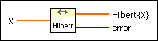
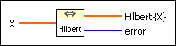
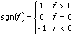

Fast Hilbert Transform VI
Owning Palette: Transforms VIs
Requires: Full Development System
Computes the fast Hilbert transform of the input sequence X.

 Add to the block diagram Add to the block diagram |
 Find on the palette Find on the palette |
Owning Palette: Transforms VIs
Requires: Full Development System
Computes the fast Hilbert transform of the input sequence X.

| Add to the block diagram |
Find on the palette |
 |
X specifies the number of elements in the data array. |
 |
Hilbert{X} is the fast Hilbert transform of the input sequence. |
 |
error returns any error or warning from the VI. You can wire error to the Error Cluster From Error Code VI to convert the error code or warning into an error cluster. |
The Hilbert transform of a function x(t) is defined as
 .
.
Using Fourier identities, you can show the Fourier transform of the Hilbert transform of x(t) is
h(t)  H(f) = - j sgn(f) X(f),
H(f) = - j sgn(f) X(f),
where x(t) X(f) is a Fourier transform pair and

The Fast Hilbert Transform VI performs the discrete implementation of the Hilbert transform with the aid of the FFT routines based upon the h(t) H(f) Fourier transform pair by taking the following steps.
Refer to the output format of the Complex FFT instance of the FFT VI for more information.
You use the Hilbert transform to extract instantaneous phase information and obtain the single-sideband spectra, obtain the envelope of an oscillating signal, detect echoes, and reduce sampling rates.
The output sequence Y = Inverse FFT [X] is complex and it is returned in one complex array: Y = (Yre,Yim).
 | Note Because the Fast Hilbert Transform VI sets the DC and Nyquist components to zero when the number of elements in the input sequence is even, you cannot always recover the original signal with an inverse Hilbert transform. The Hilbert transform works well with bandpass limited signals, which exclude the DC and the Nyquist components. |
Refer to the Echo Detector VI in the labview\examples\Signal Processing\Transforms directory for an example of using the Fast Hilbert Transform VI.
 Open example Find related examples
Open example Find related examples